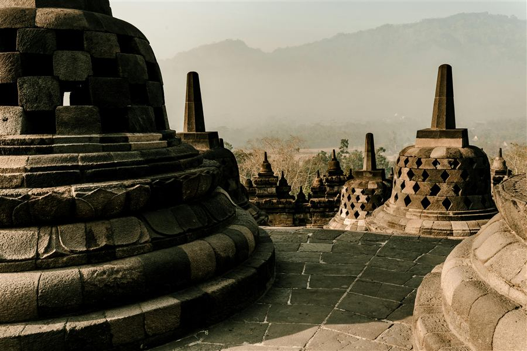

Volcanes y templos
Java: Borobudur, Yogyakarta y los volcanes del este
El viaje empieza en el corazón histórico de Indonesia. Borobudur, el mayor templo budista del mundo, se vive con acceso privado al amanecer; Yogyakarta, la ciudad de los sultanes, guarda su palacio de agua y las artes más antiguas de Java, y muy cerca, los templos hindúes de Prambanan completan la visita. Si el viaje continúa hacia el este, el mar de arena del Bromo al amanecer y el fuego azul del Ijen ponen el contrapunto más salvaje. Lo contamos en detalle en Bassa Culture.
- Borobudur con acceso privado al amanecer
- Yogyakarta y el palacio de agua de los sultanes
- El mar de arena del Bromo al alba
CuándoDe abril a octubre, estación seca.